Last Updated: 2025-04-27
사전에 안내해 드린대로 Android Studio Narwhal | 2025.1.1을 아직 설치하지 않으셨다면, 다음 설치 가이드를 참고하여 설치해 주세요!
이 Hands-on에서는 AI를 실제 안드로이드 개발과정에 어떻게 녹일 수 있을지 체험할 수 있습니다. 더 구조적이고 명시적인 프롬프트를 작성하기 위한 인수 조건, Android Studio에서 제공하는 여러 앱 개발 생산성 향상을 위한 Gemini 기능 등을 소개합니다.
참가자는 안드로이드 스튜디오를 가볍게 다뤄본 적이 있으며, 프롬프트 엔지니어링에 대한 기본적인 지식을 알고 있다고 간주합니다. 실습 중 Compose UI 코드를 다루긴 하지만 Compose에 대한 지식을 필수적으로 요구하진 않습니다.
AI를 본격적으로 마주하기 전에, 더욱 구조적인 결과물을 위해 인수 조건이라는 개념을 먼저 소개한다.
https://www.atlassian.com/work-management/project-management/acceptance-criteria
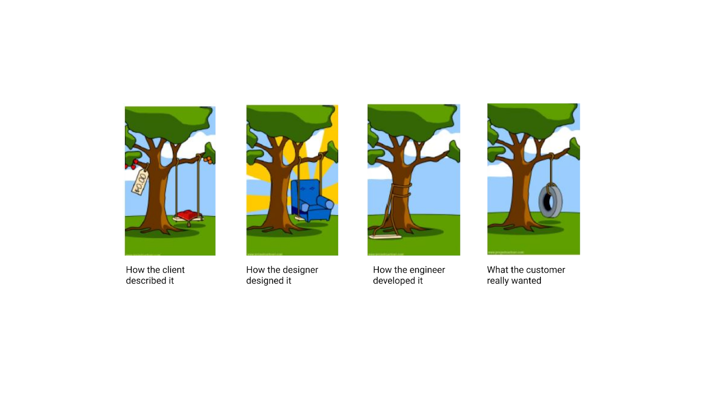
인수 조건(Acceptance Criteria)은 소프트웨어 개발에서 기능이나 사용자 스토리가 '완료'되었다고 간주되기 위한 구체적인 기준을 의미한다. 이는 팀 간 명확한 소통을 돕고, 기대치를 명확히 하여 개발 과정에서의 오해나 재작업을 줄인다. 단순히 개발 팀 내에서 뿐만 아니라 PM, QA 등 여러 이해 관계자, 그리고 자연어로 소통하는 AI 프롬프트와의 페어 프로그래밍에서도 중요한 역할을 한다.
사용자 스토리: 로그인한 사용자는 계정 정보를 수정하여 프로필을 최신 상태로 유지할 수 있다.
인수 조건:
이론적인 설명을 넘어, 우리가 핸즈온에서 활용할 AI 도구인 Gemini에게 직접 인수 조건(Acceptance Criteria)의 중요성에 대해 물어보며 그 의미를 더 깊이 이해해 보자. 특히, 전통적인 소프트웨어 개발에서의 중요성과 더불어, AI 모델과 소통하는 '프롬프트 엔지니어링' 관점에서의 중요성을 비교하며 확인해 보는 것을 추천한다.
Explain why Acceptance Criteria are important in Software Development.
Explain why Acceptance Criteria are important in Prompt Engineering.
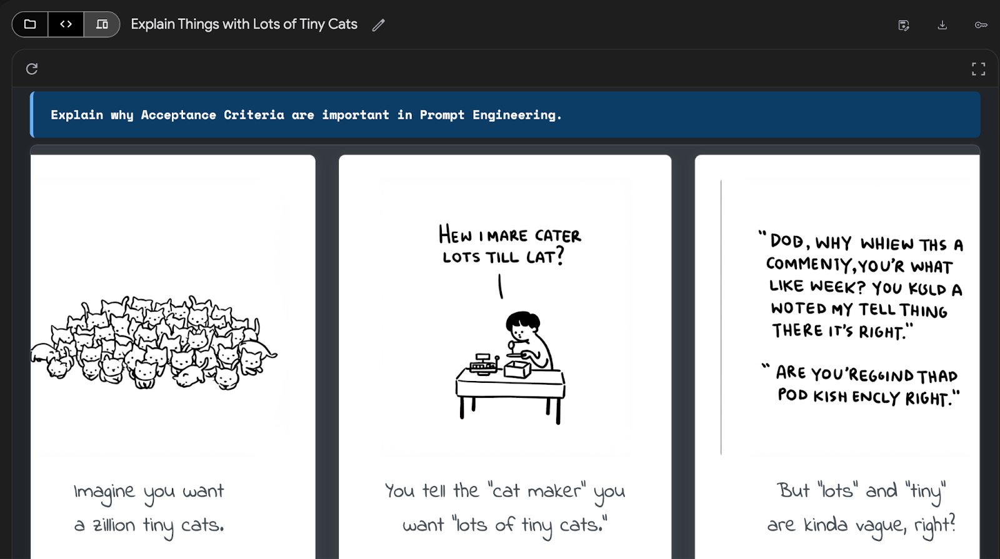
Android Studio에서 새 프로젝트를 생성한다.
New Project > Empty Activity 선택. Minimum SDK는 26 이상으로 설정 후 빌드한다.
참고: https://developer.android.com/studio/projects/create-project
Android Studio에서는 Gemini 채팅 인터페이스 Gemini in Android Studio를 제공하며, Android Studio Narwhal부터는 이미지 형태의 스크린샷을 첨부하여 프롬프팅할 수 있다.
참고: Android Developers Blog: Multimodal image attachment is now available for Gemini in Android Studio
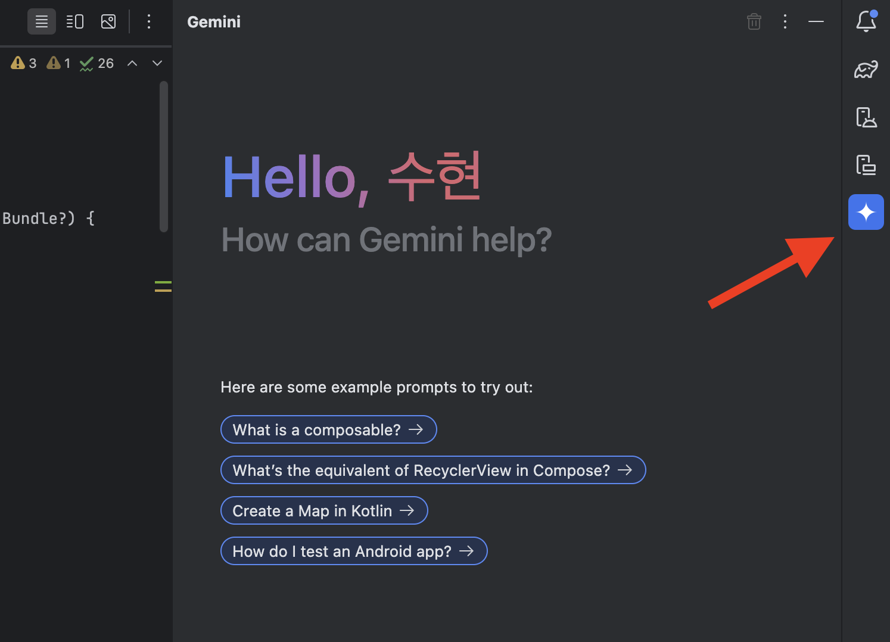
이제 Gemini in Android Studio에 다음 앱 스크린샷을 첨부하여 UI의 요구 사항을 분석하라고 하자.
이 화면의 인수 조건(Acceptance Criteria)을 분석해줘. 각각의 인수 조건은 테스트 시나리오로 만들어질 수 있도록 명확한 결과와 가능한 측정 가능한 수치가 포함되어야 해.
[응답 예시]
인수 조건: 도넛 상세 화면에는 도넛 이미지, 이름, 태그라인, 가격이 표시되어야 한다.
테스트 시나리오: 1. 화면 진입 시 도넛의 이름이 올바르게 표시되는지 확인한다. (...)
이미지 레퍼런스: https://github.com/android/compose-samples/tree/main/Jetsnack
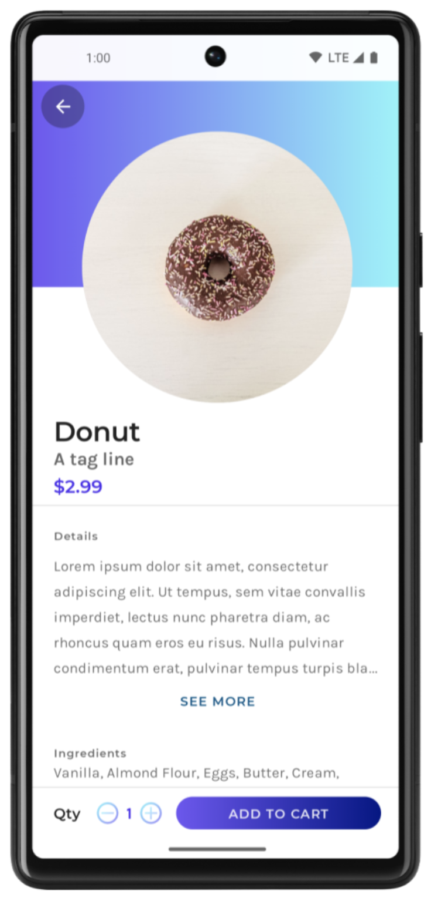 | 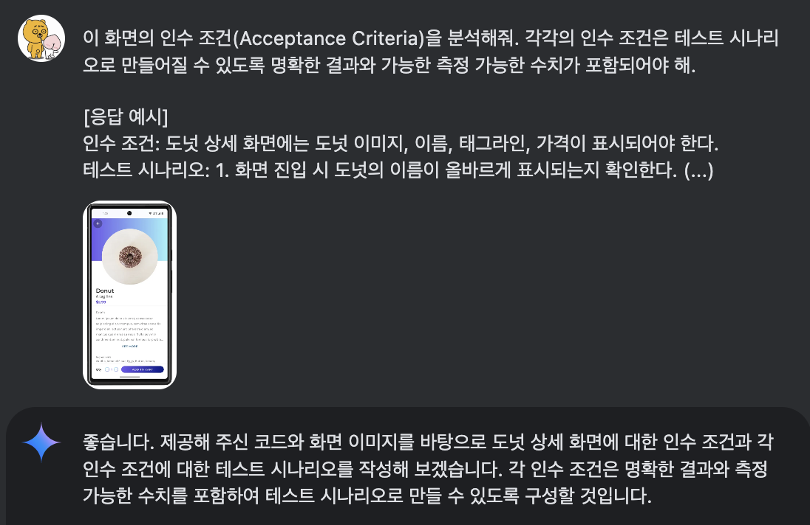 |
사람 간 페어 프로그래밍에서는 상호 이해를 위해 많은 커뮤니케이션이 필요하지만, 인수 조건을 기반으로 하면 AI와의 협업은 명세 기반으로 진행되어 커뮤니케이션 비용이 줄고, 결과의 퀄리티는 높아진다.
너가 분석한 요구 사항을 아래 기준에 충족하도록 Compose로 구현해줘.
- 의미있는 단위의 컴포넌트 분리
- 동적 데이터 주입이 가능하도록 테스트 가능한 컴포넌트로 구현
- Material3 컴포넌트 활용
- drawable 리소스는 `R.drawable.ic_launcher_foreground` 활용
(선택사항) - 나는 Compose를 처음 다루는 사람이니 코드를 어떻게 삽입해야 하는지도 친절하게 알려줘.
이제 앱 실행 후 결과를 확인해 보자.
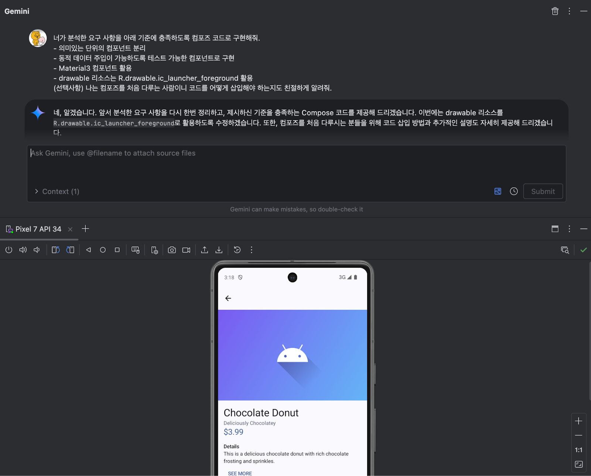
일부 컴파일 에러가 발생하더라도 괜찮다. Gemini에게 문제 상황을 기술하면 그 이유를 알려줄 것이다.
인수 테스트는 기능 요구사항 충족 여부를 확인하는 기준선 역할을 하며, 테스트를 통과하면 개발 완료로 간주할 수 있다. UI 테스트, 단위 테스트 등 여러 테스트 방법과 목적에 따라 그 형태는 달라질 수 있으나 이번 Hands-on에서는 자세히 다루지 않는다.
인수 테스트를 생성하여 구현 완료에 대한 판단 장치를 만들어 보자.
인수 조건을 기반으로 테스트 코드를 만들어줘.
- Compose UI Testing 활용
- 구체적인 UI 정합성과 관련된 시나리오는 제외
- 테스트명은 한글 시나리오
- 상태 변화와 관련된 시나리오에서는 관찰 가능한 state 활용
(선택사항) 나는 테스트를 처음 다루는 사람이니 코드를 어떻게 삽입해야 하는지도 친절하게 알려줘.
테스트 코드 실행 후 결과를 확인한다.
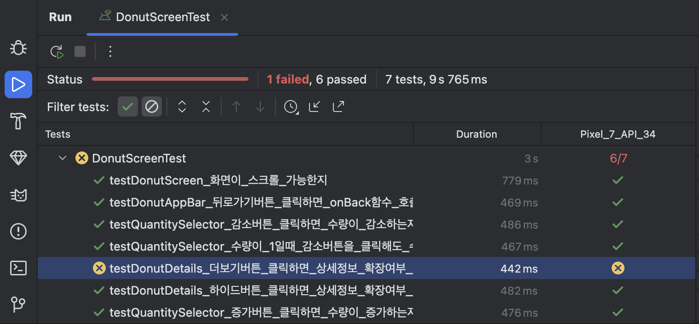
일부 테스트 시나리오가 실패하더라도 괜찮다. 다음 섹션에서 이어서 리팩터링을 진행한다.
앞선 단계에서 작성한 인수 테스트 중 일부는 실패했을 수 있다. 실제 개발 과정에서도 흔히 발생하는 일이며, 테스트는 바로 이런 문제를 발견하고 코드를 개선할 기회를 제공하기 위해 존재한다.
이제 Gemini를 페어 프로그래밍 파트너로 삼아, 실패하는 테스트를 통과시키거나 이 외의 코드 품질을 개선하는 리팩터링 과정을 진행해 보자. 리팩터링은 기능 변경 없이 코드의 구조를 개선하여 가독성, 유지보수성, 성능 등을 향상시키는 작업이다. 리팩터링을 진행한 후에도 여전히 기작성된 인수 조건/인수 테스트로 앱의 품질을 보장할 수 있다.
‘testDonutDetails_더보기버튼_클릭하면_상세정보_확장여부_변경되는지' 테스트가 실패했어. 이 테스트를 통과하도록 함수를 리팩터링하고, 코드 개선 방안(예: 상태 관리 방식 개선, 가독성 향상)이 있다면 제안해 줘.
(선택사항) 나는 Compose 상태 관리에 아직 익숙하지 않으니, 변경된 코드의 상태 관리 로직에 대해 자세히 설명해줘.
Gemini는 현재 열려있는 파일이나 선택된 코드의 맥락을 이해할 수 있으므로 코드 블럭을 복사하여 붙여 넣지 않아도 된다.
만약 테스트가 여전히 실패하거나 Gemini의 제안이 만족스럽지 않다면, 문제 상황을 더 구체적으로 설명하거나 (예: "수량 상태가 여전히 업데이트되지 않아", "클릭 이벤트 처리가 누락된 것 같아"), 다른 접근 방식을 요청하는 추가 프롬프트를 작성하여 Gemini와 대화를 이어간다. 이것이 바로 AI와 함께하는 '페어 프로그래밍'의 과정이다. 핵심은 빠른 피드백(예: 테스트, Compose UI Preview, 실행 결과)을 받으며 긴밀한 주기로 소통하는 것이다.
마지막으로 또 리팩터링이 필요한 곳이 있다면 추가로 요청하자:
Compose에서 UI Preview를 확인하기 위한 방법을 알려주고, 반응형 UI 요구 사항이 지켜졌는지를 확인할 수 있는 Preview를 만들어줘.
UI에 포함된 비즈니스 로직을 ViewModel로 옮기고, 이 로직을 단위 테스트하는 방법을 알려줘.
참고 - Gemini와의 대화시 고려해야 할 사항: https://developer.android.com/studio/preview/gemini/chat
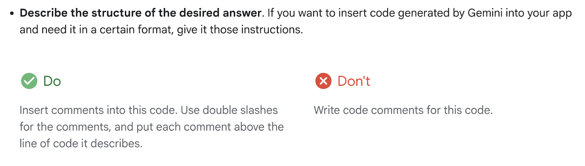
앞선 섹션에서는 인수 조건(Acceptance Criteria)을 기반으로 AI와 협업하여 특정 기능을 구현하고 테스트하는 과정을 경험했다. 이번 섹션에서는 Android Studio에 내장된 Gemini 기능을 활용하여 개발 과정 전반의 생산성을 높일 수 있는 다양한 방법들을 실습해 보자.
개발자들에게는 새로운 코드를 작성하는 것만큼이나 기존 코드를 이해하고 문서화하며 리팩터링하는 작업도 중요하다. Gemini는 이러한 작업들의 효율을 크게 높여줄 수 있다.
문서화가 필요한 코드 스니펫을 선택하고 마우스 오른쪽 버튼을 클릭한 다음, 컨텍스트 메뉴에서 Gemini > Document Function을 선택하면 코드에 대한 KDoc 주석을 자동으로 생성할 수 있다.
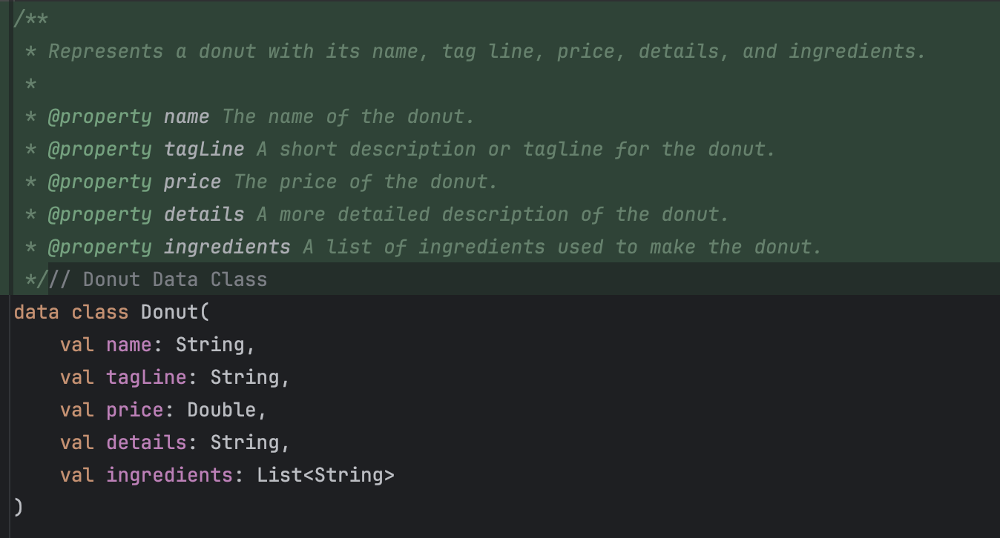
참고: https://developer.android.com/studio/preview/gemini/document
리펙터링이 필요한 코드 스니펫을 선택하고 마우스 오른쪽 버튼을 클릭한 다음, 컨텍스트 메뉴에서 Gemini > Explain Code 또는 Suggest Improvements 을 선택하면 코드 개선에 도움이 될 만한 아이디어를 얻을 수 있다.
또는 직접 코드 블럭을 선택하여 코드 개선 방향을 프롬프팅할 수도 있다.
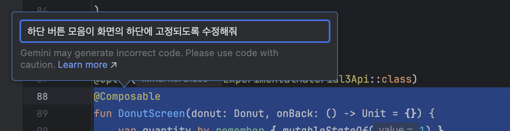
참고: https://developer.android.com/studio/preview/gemini/ai-code-completion
잘 작성된 단위 테스트는 비즈니스 로직의 안정성을 높이고 예상치 못한 버그를 사전에 방지하는 데 중요하다. (하지만 작성하기 매우 귀찮다) Gemini를 활용하면 특정 함수나 클래스에 대한 단위 테스트 케이스 시나리오를 클릭 몇 번으로 생성할 수 있다.
테스트 케이스 시나리오가 필요한 코드 스니펫을 선택하고 마우스 오른쪽 버튼을 클릭한 다음, 컨텍스트 메뉴에서 Gemini > Generate Unit Test Scenarios 을 선택하면 된다.
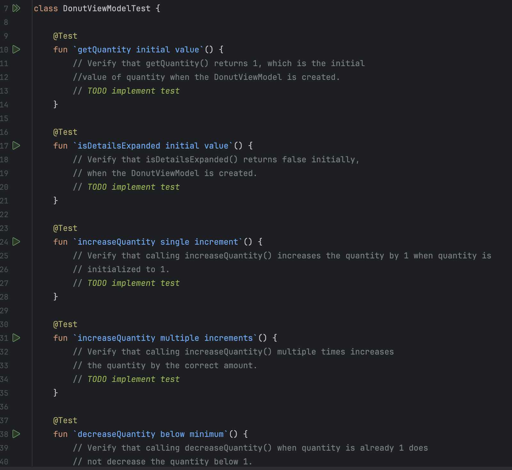
참고: https://developer.android.com/studio/preview/gemini/deploy#unit-test-gen
지금까지 우리는 Android Studio 내에서 Gemini를 활용하여 코드 작성, 리팩터링, 테스트 생성 등 개발 생산성을 높이는 방법에 집중했다. 하지만 AI는 안드로이드 개발자에게 훨씬 더 다양한 방식으로 활용될 수 있다. 몇 가지 아이디어를 가볍게 소개한다.
Gemini API와 같은 언어 모델은 단순히 개발 도구를 넘어 앱의 핵심 기능을 제공하는 콘텐츠 생성기로 활용될 수도 있다. (서버에서 처리하는 것이 일반적으로는 더 좋은 성능을 가지며 권장되지만, 클라이언트 단독으로도 활용하는 것도 가능하다)
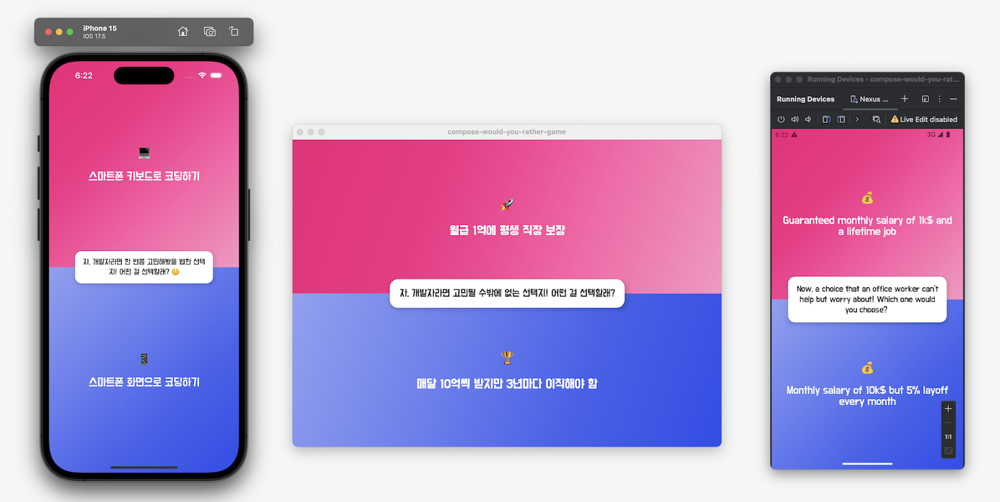
https://github.com/wisemuji/compose-would-you-rather-game
밸런스 게임 형식의 질문을 AI(Gemini API)가 동적으로 생성하여 사용자에게 제공한다. 개발자가 수많은 질문 쌍을 미리 데이터베이스에 저장해 둘 필요 없이, AI가 계속해서 새롭고 흥미로운 질문을 만들어낸다.
클라우드 기반 AI API 호출과 온디바이스(On-device) AI 모델 실행 등의 방법을 활용할 수 있다.
https://developer.android.com/studio/preview/gemini/gemini-for-businesses
최근에 소개된 Gemini for Business는 개인 개발자용 Gemini 기능과 달리, 조직의 데이터 보안과 개인 정보 보호에 중점을 두어 입력한 코드나 프롬프트가 Google의 모델 학습에 사용되지 않음을 보장하여, 기업의 민감한 지적 재산을 보호한다. 조직 차원에서 접근 권한을 관리하고 보안 정책을 적용할 수도 있다.
~이제 회사에 떼쓸 시간!~
이것으로 Build with AI on Android Session 2 - AI 시대의 안드로이드 개발 Hands-on 랩을 마무리합니다.
좋은 인수 조건은 사람 간의 협업뿐만 아니라 AI와의 소통에서도 큰 도움이 됩니다. 자연어 프롬프팅 과정에서 원하는 결과물을 구체적으로 전달할수록 더 정확하고 만족스러운 결과물을 얻을 수 있습니다.
Android Studio에 내장된 Gemini 기능을 활용하여 코드 문서화, 리팩터링 제안 받기, 단위 테스트 및 Compose Preview 생성 등 개발 과정에서 생산성을 높일 수 있는 방법들을 체험할 수 있었습니다. 이러한 내장 기능들은 계속 업데이트될 것으로 기대합니다.